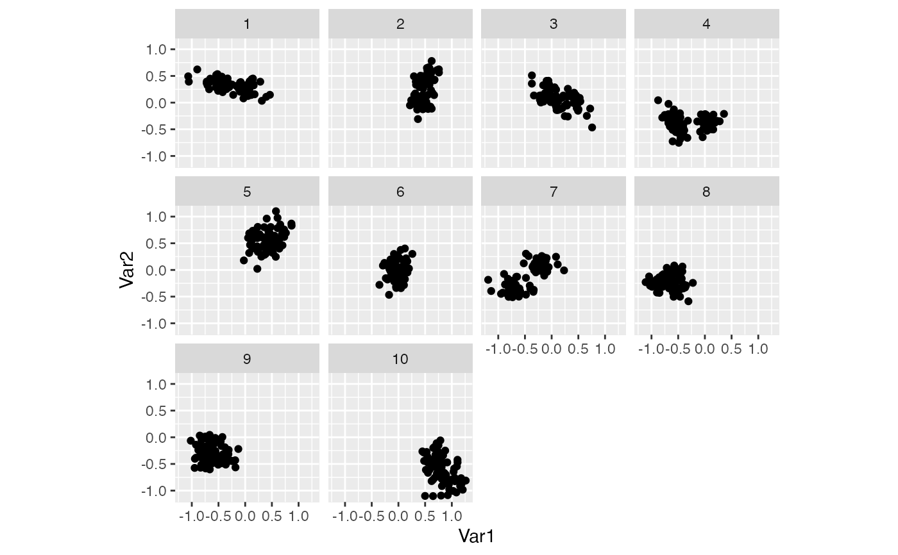

This computes the projected values of each observation at each step, and allows you to recreate static views of the animated plots.
path_curves(history, data = attr(history, "data"))
| history | list of bases produced by |
|---|---|
| data | dataset to be projected on to bases |
#>#> target_dist - cur_dist: 0 #> generation: dist = 1.303579 #> target_dist - cur_dist: 1.303579 #> generation: dist = 1.414186 #> target_dist - cur_dist: 0 #> generation: dist = 1.198253 #> target_dist - cur_dist: 0 #> generation: dist = 1.351405 #> target_dist - cur_dist: 0 #> generation: dist = 1.310542 #> target_dist - cur_dist: 0 #> generation: dist = 1.412038 #> target_dist - cur_dist: 0 #> generation: dist = 1.26692 #> target_dist - cur_dist: 0 #> generation: dist = 1.378295 #> target_dist - cur_dist: 0 #> generation: dist = 1.375996 #> target_dist - cur_dist: 0 #> generation: dist = 0.9337239 #> target_dist - cur_dist: 0 #> generation: dist = 1.40444#>#> target_dist - cur_dist: 0 #> generation: dist = 1.862785 #> target_dist - cur_dist: 1.862785 #> generation: dist = 1.525688 #> target_dist - cur_dist: 0 #> generation: dist = 1.712288 #> target_dist - cur_dist: 0 #> generation: dist = 1.725758 #> target_dist - cur_dist: 0 #> generation: dist = 1.759956 #> target_dist - cur_dist: 0 #> generation: dist = 1.926079 #> target_dist - cur_dist: 0 #> generation: dist = 1.44856 #> target_dist - cur_dist: 0 #> generation: dist = 1.595841 #> target_dist - cur_dist: 0 #> generation: dist = 1.669636 #> target_dist - cur_dist: 0 #> generation: dist = 0.9750647 #> target_dist - cur_dist: 0 #> generation: dist = 1.45582if (require("ggplot2")) { plot(path_curves(path1d)) plot(path_curves(interpolate(path1d))) plot(path_curves(path2d)) plot(path_curves(interpolate(path2d))) # Instead of relying on the built in plot method, you might want to # generate your own. Here are few examples of alternative displays: df <- path_curves(path2d) ggplot(data = df, aes(x = step, y = value, group = obs:var, colour = var)) + geom_line() + facet_wrap(~obs) library(tidyr) ggplot( data = pivot_wider(df, id_cols = c(obs, step), names_from = var, names_prefix = "Var", values_from = value ), aes(x = Var1, y = Var2) ) + geom_point() + facet_wrap(~step) + coord_equal() }#>#> target_dist - cur_dist: 0 #> generation: dist = 1.198253 #> target_dist - cur_dist: 1.198253 #> target_dist - cur_dist: 1.148253 #> target_dist - cur_dist: 1.098253 #> target_dist - cur_dist: 1.048253 #> target_dist - cur_dist: 0.9982525 #> target_dist - cur_dist: 0.9482525 #> target_dist - cur_dist: 0.8982525 #> target_dist - cur_dist: 0.8482525 #> target_dist - cur_dist: 0.7982525 #> target_dist - cur_dist: 0.7482525 #> target_dist - cur_dist: 0.6982525 #> target_dist - cur_dist: 0.6482525 #> target_dist - cur_dist: 0.5982525 #> target_dist - cur_dist: 0.5482525 #> target_dist - cur_dist: 0.4982525 #> target_dist - cur_dist: 0.4482525 #> target_dist - cur_dist: 0.3982525 #> target_dist - cur_dist: 0.3482525 #> target_dist - cur_dist: 0.2982525 #> target_dist - cur_dist: 0.2482525 #> target_dist - cur_dist: 0.1982525 #> target_dist - cur_dist: 0.1482525 #> target_dist - cur_dist: 0.09825253 #> target_dist - cur_dist: 0.04825253 #> generation: dist = 1.351405 #> target_dist - cur_dist: 1.351405 #> target_dist - cur_dist: 1.301405 #> target_dist - cur_dist: 1.251405 #> target_dist - cur_dist: 1.201405 #> target_dist - cur_dist: 1.151405 #> target_dist - cur_dist: 1.101405 #> target_dist - cur_dist: 1.051405 #> target_dist - cur_dist: 1.001405 #> target_dist - cur_dist: 0.9514052 #> target_dist - cur_dist: 0.9014052 #> target_dist - cur_dist: 0.8514052 #> target_dist - cur_dist: 0.8014052 #> target_dist - cur_dist: 0.7514052 #> target_dist - cur_dist: 0.7014052 #> target_dist - cur_dist: 0.6514052 #> target_dist - cur_dist: 0.6014052 #> target_dist - cur_dist: 0.5514052 #> target_dist - cur_dist: 0.5014052 #> target_dist - cur_dist: 0.4514052 #> target_dist - cur_dist: 0.4014052 #> target_dist - cur_dist: 0.3514052 #> target_dist - cur_dist: 0.3014052 #> target_dist - cur_dist: 0.2514052 #> target_dist - cur_dist: 0.2014052 #> target_dist - cur_dist: 0.1514052 #> target_dist - cur_dist: 0.1014052 #> target_dist - cur_dist: 0.05140518 #> target_dist - cur_dist: 0.001405182 #> generation: dist = 1.310542 #> target_dist - cur_dist: 1.310542 #> target_dist - cur_dist: 1.260542 #> target_dist - cur_dist: 1.210542 #> target_dist - cur_dist: 1.160542 #> target_dist - cur_dist: 1.110542 #> target_dist - cur_dist: 1.060542 #> target_dist - cur_dist: 1.010542 #> target_dist - cur_dist: 0.9605419 #> target_dist - cur_dist: 0.9105419 #> target_dist - cur_dist: 0.8605419 #> target_dist - cur_dist: 0.8105419 #> target_dist - cur_dist: 0.7605419 #> target_dist - cur_dist: 0.7105419 #> target_dist - cur_dist: 0.6605419 #> target_dist - cur_dist: 0.6105419 #> target_dist - cur_dist: 0.5605419 #> target_dist - cur_dist: 0.5105419 #> target_dist - cur_dist: 0.4605419 #> target_dist - cur_dist: 0.4105419 #> target_dist - cur_dist: 0.3605419 #> target_dist - cur_dist: 0.3105419 #> target_dist - cur_dist: 0.2605419 #> target_dist - cur_dist: 0.2105419 #> target_dist - cur_dist: 0.1605419 #> target_dist - cur_dist: 0.1105419 #> target_dist - cur_dist: 0.06054191 #> target_dist - cur_dist: 0.01054191 #> generation: dist = 1.412038 #> target_dist - cur_dist: 1.412038 #> target_dist - cur_dist: 1.362038 #> target_dist - cur_dist: 1.312038 #> target_dist - cur_dist: 1.262038 #> target_dist - cur_dist: 1.212038 #> target_dist - cur_dist: 1.162038 #> target_dist - cur_dist: 1.112038 #> target_dist - cur_dist: 1.062038 #> target_dist - cur_dist: 1.012038 #> target_dist - cur_dist: 0.9620383 #> target_dist - cur_dist: 0.9120383 #> target_dist - cur_dist: 0.8620383 #> target_dist - cur_dist: 0.8120383 #> target_dist - cur_dist: 0.7620383 #> target_dist - cur_dist: 0.7120383 #> target_dist - cur_dist: 0.6620383 #> target_dist - cur_dist: 0.6120383 #> target_dist - cur_dist: 0.5620383 #> target_dist - cur_dist: 0.5120383 #> target_dist - cur_dist: 0.4620383 #> target_dist - cur_dist: 0.4120383 #> target_dist - cur_dist: 0.3620383 #> target_dist - cur_dist: 0.3120383 #> target_dist - cur_dist: 0.2620383 #> target_dist - cur_dist: 0.2120383 #> target_dist - cur_dist: 0.1620383 #> target_dist - cur_dist: 0.1120383 #> target_dist - cur_dist: 0.06203832 #> target_dist - cur_dist: 0.01203832 #> generation: dist = 1.26692 #> target_dist - cur_dist: 1.26692 #> target_dist - cur_dist: 1.21692 #> target_dist - cur_dist: 1.16692 #> target_dist - cur_dist: 1.11692 #> target_dist - cur_dist: 1.06692 #> target_dist - cur_dist: 1.01692 #> target_dist - cur_dist: 0.9669198 #> target_dist - cur_dist: 0.9169198 #> target_dist - cur_dist: 0.8669198 #> target_dist - cur_dist: 0.8169198 #> target_dist - cur_dist: 0.7669198 #> target_dist - cur_dist: 0.7169198 #> target_dist - cur_dist: 0.6669198 #> target_dist - cur_dist: 0.6169198 #> target_dist - cur_dist: 0.5669198 #> target_dist - cur_dist: 0.5169198 #> target_dist - cur_dist: 0.4669198 #> target_dist - cur_dist: 0.4169198 #> target_dist - cur_dist: 0.3669198 #> target_dist - cur_dist: 0.3169198 #> target_dist - cur_dist: 0.2669198 #> target_dist - cur_dist: 0.2169198 #> target_dist - cur_dist: 0.1669198 #> target_dist - cur_dist: 0.1169198 #> target_dist - cur_dist: 0.0669198 #> target_dist - cur_dist: 0.0169198 #> generation: dist = 1.378295 #> target_dist - cur_dist: 1.378295 #> target_dist - cur_dist: 1.328295 #> target_dist - cur_dist: 1.278295 #> target_dist - cur_dist: 1.228295 #> target_dist - cur_dist: 1.178295 #> target_dist - cur_dist: 1.128295 #> target_dist - cur_dist: 1.078295 #> target_dist - cur_dist: 1.028295 #> target_dist - cur_dist: 0.9782947 #> target_dist - cur_dist: 0.9282947 #> target_dist - cur_dist: 0.8782947 #> target_dist - cur_dist: 0.8282947 #> target_dist - cur_dist: 0.7782947 #> target_dist - cur_dist: 0.7282947 #> target_dist - cur_dist: 0.6782947 #> target_dist - cur_dist: 0.6282947 #> target_dist - cur_dist: 0.5782947 #> target_dist - cur_dist: 0.5282947 #> target_dist - cur_dist: 0.4782947 #> target_dist - cur_dist: 0.4282947 #> target_dist - cur_dist: 0.3782947 #> target_dist - cur_dist: 0.3282947 #> target_dist - cur_dist: 0.2782947 #> target_dist - cur_dist: 0.2282947 #> target_dist - cur_dist: 0.1782947 #> target_dist - cur_dist: 0.1282947 #> target_dist - cur_dist: 0.07829475 #> target_dist - cur_dist: 0.02829475 #> generation: dist = 1.375996 #> target_dist - cur_dist: 1.375996 #> target_dist - cur_dist: 1.325996 #> target_dist - cur_dist: 1.275996 #> target_dist - cur_dist: 1.225996 #> target_dist - cur_dist: 1.175996 #> target_dist - cur_dist: 1.125996 #> target_dist - cur_dist: 1.075996 #> target_dist - cur_dist: 1.025996 #> target_dist - cur_dist: 0.975996 #> target_dist - cur_dist: 0.925996 #> target_dist - cur_dist: 0.875996 #> target_dist - cur_dist: 0.825996 #> target_dist - cur_dist: 0.775996 #> target_dist - cur_dist: 0.725996 #> target_dist - cur_dist: 0.675996 #> target_dist - cur_dist: 0.625996 #> target_dist - cur_dist: 0.575996 #> target_dist - cur_dist: 0.525996 #> target_dist - cur_dist: 0.475996 #> target_dist - cur_dist: 0.425996 #> target_dist - cur_dist: 0.375996 #> target_dist - cur_dist: 0.325996 #> target_dist - cur_dist: 0.275996 #> target_dist - cur_dist: 0.225996 #> target_dist - cur_dist: 0.175996 #> target_dist - cur_dist: 0.125996 #> target_dist - cur_dist: 0.07599605 #> target_dist - cur_dist: 0.02599605 #> generation: dist = 0.9337239 #> target_dist - cur_dist: 0.9337239 #> target_dist - cur_dist: 0.8837239 #> target_dist - cur_dist: 0.8337239 #> target_dist - cur_dist: 0.7837239 #> target_dist - cur_dist: 0.7337239 #> target_dist - cur_dist: 0.6837239 #> target_dist - cur_dist: 0.6337239 #> target_dist - cur_dist: 0.5837239 #> target_dist - cur_dist: 0.5337239 #> target_dist - cur_dist: 0.4837239 #> target_dist - cur_dist: 0.4337239 #> target_dist - cur_dist: 0.3837239 #> target_dist - cur_dist: 0.3337239 #> target_dist - cur_dist: 0.2837239 #> target_dist - cur_dist: 0.2337239 #> target_dist - cur_dist: 0.1837239 #> target_dist - cur_dist: 0.1337239 #> target_dist - cur_dist: 0.08372393 #> target_dist - cur_dist: 0.03372393 #> generation: dist = 1.40444 #> target_dist - cur_dist: 1.40444 #> target_dist - cur_dist: 1.35444 #> target_dist - cur_dist: 1.30444 #> target_dist - cur_dist: 1.25444 #> target_dist - cur_dist: 1.20444 #> target_dist - cur_dist: 1.15444 #> target_dist - cur_dist: 1.10444 #> target_dist - cur_dist: 1.05444 #> target_dist - cur_dist: 1.00444 #> target_dist - cur_dist: 0.9544399 #> target_dist - cur_dist: 0.9044399 #> target_dist - cur_dist: 0.8544399 #> target_dist - cur_dist: 0.8044399 #> target_dist - cur_dist: 0.7544399 #> target_dist - cur_dist: 0.7044399 #> target_dist - cur_dist: 0.6544399 #> target_dist - cur_dist: 0.6044399 #> target_dist - cur_dist: 0.5544399 #> target_dist - cur_dist: 0.5044399 #> target_dist - cur_dist: 0.4544399 #> target_dist - cur_dist: 0.4044399 #> target_dist - cur_dist: 0.3544399 #> target_dist - cur_dist: 0.3044399 #> target_dist - cur_dist: 0.2544399 #> target_dist - cur_dist: 0.2044399 #> target_dist - cur_dist: 0.1544399 #> target_dist - cur_dist: 0.1044399 #> target_dist - cur_dist: 0.05443987 #> target_dist - cur_dist: 0.004439869 #> target_dist - cur_dist: 0 #> generation: dist = 1.712288 #> target_dist - cur_dist: 1.712288 #> target_dist - cur_dist: 1.662288 #> target_dist - cur_dist: 1.612288 #> target_dist - cur_dist: 1.562288 #> target_dist - cur_dist: 1.512288 #> target_dist - cur_dist: 1.462288 #> target_dist - cur_dist: 1.412288 #> target_dist - cur_dist: 1.362288 #> target_dist - cur_dist: 1.312288 #> target_dist - cur_dist: 1.262288 #> target_dist - cur_dist: 1.212288 #> target_dist - cur_dist: 1.162288 #> target_dist - cur_dist: 1.112288 #> target_dist - cur_dist: 1.062288 #> target_dist - cur_dist: 1.012288 #> target_dist - cur_dist: 0.9622877 #> target_dist - cur_dist: 0.9122877 #> target_dist - cur_dist: 0.8622877 #> target_dist - cur_dist: 0.8122877 #> target_dist - cur_dist: 0.7622877 #> target_dist - cur_dist: 0.7122877 #> target_dist - cur_dist: 0.6622877 #> target_dist - cur_dist: 0.6122877 #> target_dist - cur_dist: 0.5622877 #> target_dist - cur_dist: 0.5122877 #> target_dist - cur_dist: 0.4622877 #> target_dist - cur_dist: 0.4122877 #> target_dist - cur_dist: 0.3622877 #> target_dist - cur_dist: 0.3122877 #> target_dist - cur_dist: 0.2622877 #> target_dist - cur_dist: 0.2122877 #> target_dist - cur_dist: 0.1622877 #> target_dist - cur_dist: 0.1122877 #> target_dist - cur_dist: 0.06228773 #> target_dist - cur_dist: 0.01228773 #> generation: dist = 1.725758 #> target_dist - cur_dist: 1.725758 #> target_dist - cur_dist: 1.675758 #> target_dist - cur_dist: 1.625758 #> target_dist - cur_dist: 1.575758 #> target_dist - cur_dist: 1.525758 #> target_dist - cur_dist: 1.475758 #> target_dist - cur_dist: 1.425758 #> target_dist - cur_dist: 1.375758 #> target_dist - cur_dist: 1.325758 #> target_dist - cur_dist: 1.275758 #> target_dist - cur_dist: 1.225758 #> target_dist - cur_dist: 1.175758 #> target_dist - cur_dist: 1.125758 #> target_dist - cur_dist: 1.075758 #> target_dist - cur_dist: 1.025758 #> target_dist - cur_dist: 0.9757582 #> target_dist - cur_dist: 0.9257582 #> target_dist - cur_dist: 0.8757582 #> target_dist - cur_dist: 0.8257582 #> target_dist - cur_dist: 0.7757582 #> target_dist - cur_dist: 0.7257582 #> target_dist - cur_dist: 0.6757582 #> target_dist - cur_dist: 0.6257582 #> target_dist - cur_dist: 0.5757582 #> target_dist - cur_dist: 0.5257582 #> target_dist - cur_dist: 0.4757582 #> target_dist - cur_dist: 0.4257582 #> target_dist - cur_dist: 0.3757582 #> target_dist - cur_dist: 0.3257582 #> target_dist - cur_dist: 0.2757582 #> target_dist - cur_dist: 0.2257582 #> target_dist - cur_dist: 0.1757582 #> target_dist - cur_dist: 0.1257582 #> target_dist - cur_dist: 0.07575824 #> target_dist - cur_dist: 0.02575824 #> generation: dist = 1.759956 #> target_dist - cur_dist: 1.759956 #> target_dist - cur_dist: 1.709956 #> target_dist - cur_dist: 1.659956 #> target_dist - cur_dist: 1.609956 #> target_dist - cur_dist: 1.559956 #> target_dist - cur_dist: 1.509956 #> target_dist - cur_dist: 1.459956 #> target_dist - cur_dist: 1.409956 #> target_dist - cur_dist: 1.359956 #> target_dist - cur_dist: 1.309956 #> target_dist - cur_dist: 1.259956 #> target_dist - cur_dist: 1.209956 #> target_dist - cur_dist: 1.159956 #> target_dist - cur_dist: 1.109956 #> target_dist - cur_dist: 1.059956 #> target_dist - cur_dist: 1.009956 #> target_dist - cur_dist: 0.9599555 #> target_dist - cur_dist: 0.9099555 #> target_dist - cur_dist: 0.8599555 #> target_dist - cur_dist: 0.8099555 #> target_dist - cur_dist: 0.7599555 #> target_dist - cur_dist: 0.7099555 #> target_dist - cur_dist: 0.6599555 #> target_dist - cur_dist: 0.6099555 #> target_dist - cur_dist: 0.5599555 #> target_dist - cur_dist: 0.5099555 #> target_dist - cur_dist: 0.4599555 #> target_dist - cur_dist: 0.4099555 #> target_dist - cur_dist: 0.3599555 #> target_dist - cur_dist: 0.3099555 #> target_dist - cur_dist: 0.2599555 #> target_dist - cur_dist: 0.2099555 #> target_dist - cur_dist: 0.1599555 #> target_dist - cur_dist: 0.1099555 #> target_dist - cur_dist: 0.05995551 #> target_dist - cur_dist: 0.009955513 #> generation: dist = 1.926079 #> target_dist - cur_dist: 1.926079 #> target_dist - cur_dist: 1.876079 #> target_dist - cur_dist: 1.826079 #> target_dist - cur_dist: 1.776079 #> target_dist - cur_dist: 1.726079 #> target_dist - cur_dist: 1.676079 #> target_dist - cur_dist: 1.626079 #> target_dist - cur_dist: 1.576079 #> target_dist - cur_dist: 1.526079 #> target_dist - cur_dist: 1.476079 #> target_dist - cur_dist: 1.426079 #> target_dist - cur_dist: 1.376079 #> target_dist - cur_dist: 1.326079 #> target_dist - cur_dist: 1.276079 #> target_dist - cur_dist: 1.226079 #> target_dist - cur_dist: 1.176079 #> target_dist - cur_dist: 1.126079 #> target_dist - cur_dist: 1.076079 #> target_dist - cur_dist: 1.026079 #> target_dist - cur_dist: 0.976079 #> target_dist - cur_dist: 0.926079 #> target_dist - cur_dist: 0.876079 #> target_dist - cur_dist: 0.826079 #> target_dist - cur_dist: 0.776079 #> target_dist - cur_dist: 0.726079 #> target_dist - cur_dist: 0.676079 #> target_dist - cur_dist: 0.626079 #> target_dist - cur_dist: 0.576079 #> target_dist - cur_dist: 0.526079 #> target_dist - cur_dist: 0.476079 #> target_dist - cur_dist: 0.426079 #> target_dist - cur_dist: 0.376079 #> target_dist - cur_dist: 0.326079 #> target_dist - cur_dist: 0.276079 #> target_dist - cur_dist: 0.226079 #> target_dist - cur_dist: 0.176079 #> target_dist - cur_dist: 0.126079 #> target_dist - cur_dist: 0.07607895 #> target_dist - cur_dist: 0.02607895 #> generation: dist = 1.44856 #> target_dist - cur_dist: 1.44856 #> target_dist - cur_dist: 1.39856 #> target_dist - cur_dist: 1.34856 #> target_dist - cur_dist: 1.29856 #> target_dist - cur_dist: 1.24856 #> target_dist - cur_dist: 1.19856 #> target_dist - cur_dist: 1.14856 #> target_dist - cur_dist: 1.09856 #> target_dist - cur_dist: 1.04856 #> target_dist - cur_dist: 0.9985597 #> target_dist - cur_dist: 0.9485597 #> target_dist - cur_dist: 0.8985597 #> target_dist - cur_dist: 0.8485597 #> target_dist - cur_dist: 0.7985597 #> target_dist - cur_dist: 0.7485597 #> target_dist - cur_dist: 0.6985597 #> target_dist - cur_dist: 0.6485597 #> target_dist - cur_dist: 0.5985597 #> target_dist - cur_dist: 0.5485597 #> target_dist - cur_dist: 0.4985597 #> target_dist - cur_dist: 0.4485597 #> target_dist - cur_dist: 0.3985597 #> target_dist - cur_dist: 0.3485597 #> target_dist - cur_dist: 0.2985597 #> target_dist - cur_dist: 0.2485597 #> target_dist - cur_dist: 0.1985597 #> target_dist - cur_dist: 0.1485597 #> target_dist - cur_dist: 0.09855971 #> target_dist - cur_dist: 0.04855971 #> generation: dist = 1.595841 #> target_dist - cur_dist: 1.595841 #> target_dist - cur_dist: 1.545841 #> target_dist - cur_dist: 1.495841 #> target_dist - cur_dist: 1.445841 #> target_dist - cur_dist: 1.395841 #> target_dist - cur_dist: 1.345841 #> target_dist - cur_dist: 1.295841 #> target_dist - cur_dist: 1.245841 #> target_dist - cur_dist: 1.195841 #> target_dist - cur_dist: 1.145841 #> target_dist - cur_dist: 1.095841 #> target_dist - cur_dist: 1.045841 #> target_dist - cur_dist: 0.9958407 #> target_dist - cur_dist: 0.9458407 #> target_dist - cur_dist: 0.8958407 #> target_dist - cur_dist: 0.8458407 #> target_dist - cur_dist: 0.7958407 #> target_dist - cur_dist: 0.7458407 #> target_dist - cur_dist: 0.6958407 #> target_dist - cur_dist: 0.6458407 #> target_dist - cur_dist: 0.5958407 #> target_dist - cur_dist: 0.5458407 #> target_dist - cur_dist: 0.4958407 #> target_dist - cur_dist: 0.4458407 #> target_dist - cur_dist: 0.3958407 #> target_dist - cur_dist: 0.3458407 #> target_dist - cur_dist: 0.2958407 #> target_dist - cur_dist: 0.2458407 #> target_dist - cur_dist: 0.1958407 #> target_dist - cur_dist: 0.1458407 #> target_dist - cur_dist: 0.09584067 #> target_dist - cur_dist: 0.04584067 #> generation: dist = 1.669636 #> target_dist - cur_dist: 1.669636 #> target_dist - cur_dist: 1.619636 #> target_dist - cur_dist: 1.569636 #> target_dist - cur_dist: 1.519636 #> target_dist - cur_dist: 1.469636 #> target_dist - cur_dist: 1.419636 #> target_dist - cur_dist: 1.369636 #> target_dist - cur_dist: 1.319636 #> target_dist - cur_dist: 1.269636 #> target_dist - cur_dist: 1.219636 #> target_dist - cur_dist: 1.169636 #> target_dist - cur_dist: 1.119636 #> target_dist - cur_dist: 1.069636 #> target_dist - cur_dist: 1.019636 #> target_dist - cur_dist: 0.9696362 #> target_dist - cur_dist: 0.9196362 #> target_dist - cur_dist: 0.8696362 #> target_dist - cur_dist: 0.8196362 #> target_dist - cur_dist: 0.7696362 #> target_dist - cur_dist: 0.7196362 #> target_dist - cur_dist: 0.6696362 #> target_dist - cur_dist: 0.6196362 #> target_dist - cur_dist: 0.5696362 #> target_dist - cur_dist: 0.5196362 #> target_dist - cur_dist: 0.4696362 #> target_dist - cur_dist: 0.4196362 #> target_dist - cur_dist: 0.3696362 #> target_dist - cur_dist: 0.3196362 #> target_dist - cur_dist: 0.2696362 #> target_dist - cur_dist: 0.2196362 #> target_dist - cur_dist: 0.1696362 #> target_dist - cur_dist: 0.1196362 #> target_dist - cur_dist: 0.06963624 #> target_dist - cur_dist: 0.01963624 #> generation: dist = 0.9750647 #> target_dist - cur_dist: 0.9750647 #> target_dist - cur_dist: 0.9250647 #> target_dist - cur_dist: 0.8750647 #> target_dist - cur_dist: 0.8250647 #> target_dist - cur_dist: 0.7750647 #> target_dist - cur_dist: 0.7250647 #> target_dist - cur_dist: 0.6750647 #> target_dist - cur_dist: 0.6250647 #> target_dist - cur_dist: 0.5750647 #> target_dist - cur_dist: 0.5250647 #> target_dist - cur_dist: 0.4750647 #> target_dist - cur_dist: 0.4250647 #> target_dist - cur_dist: 0.3750647 #> target_dist - cur_dist: 0.3250647 #> target_dist - cur_dist: 0.2750647 #> target_dist - cur_dist: 0.2250647 #> target_dist - cur_dist: 0.1750647 #> target_dist - cur_dist: 0.1250647 #> target_dist - cur_dist: 0.07506474 #> target_dist - cur_dist: 0.02506474 #> generation: dist = 1.45582 #> target_dist - cur_dist: 1.45582 #> target_dist - cur_dist: 1.40582 #> target_dist - cur_dist: 1.35582 #> target_dist - cur_dist: 1.30582 #> target_dist - cur_dist: 1.25582 #> target_dist - cur_dist: 1.20582 #> target_dist - cur_dist: 1.15582 #> target_dist - cur_dist: 1.10582 #> target_dist - cur_dist: 1.05582 #> target_dist - cur_dist: 1.00582 #> target_dist - cur_dist: 0.9558205 #> target_dist - cur_dist: 0.9058205 #> target_dist - cur_dist: 0.8558205 #> target_dist - cur_dist: 0.8058205 #> target_dist - cur_dist: 0.7558205 #> target_dist - cur_dist: 0.7058205 #> target_dist - cur_dist: 0.6558205 #> target_dist - cur_dist: 0.6058205 #> target_dist - cur_dist: 0.5558205 #> target_dist - cur_dist: 0.5058205 #> target_dist - cur_dist: 0.4558205 #> target_dist - cur_dist: 0.4058205 #> target_dist - cur_dist: 0.3558205 #> target_dist - cur_dist: 0.3058205 #> target_dist - cur_dist: 0.2558205 #> target_dist - cur_dist: 0.2058205 #> target_dist - cur_dist: 0.1558205 #> target_dist - cur_dist: 0.1058205 #> target_dist - cur_dist: 0.05582048 #> target_dist - cur_dist: 0.005820484